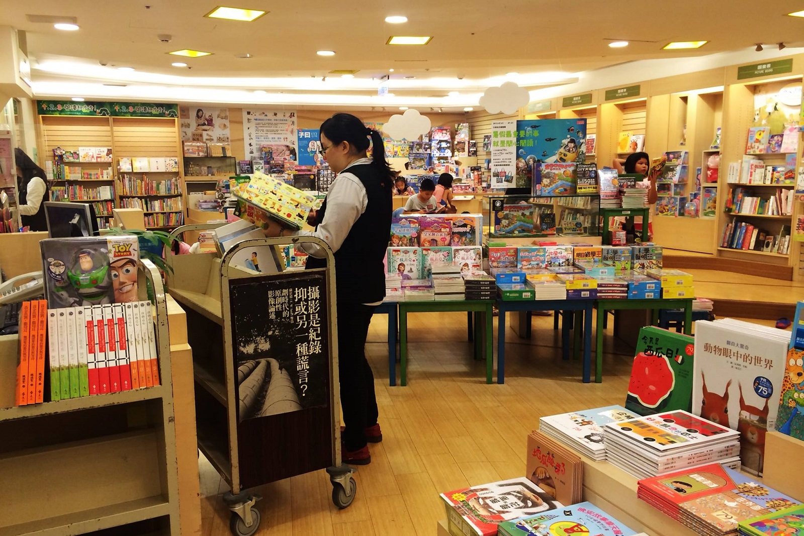

The little big things 將會持續的訪問各行各業，帶給學生更多故事
你知道一棟房子是怎麼蓋出來的嗎？
建築工人，是工地裡最前線的作業人員。通常都是體力吃重的工作，所以大多數也都是男性為主。裡面還包含了許多不同的技術， 像是灌水泥、燒焊、木工、電工等。
他們的體力和技術組合成一棟棟新穎的樓房。

喜歡看書的人，一定都幻想在書店工作，可以長時間被書包圍，滿身書香！但在背後，他們得辛苦搬運沉重的書籍，要整理書，把書上架，也要整理環境，幫客人找書結帳。
書店店員也是相當不容易阿！
你今天有走進便利商店嗎？從商品上架到煮咖啡，再從繳費到寄收包裹，隨著便利商店的功能越多，店員們也更忙碌了。
下次，也記得跟店員說聲謝謝吧！
為什麼成立 TLBT
你的夢想是什麼
在成長的歷程中，最常被問到也最現實的問題，即是「你的夢想是什麼?」，但總是說不出個所以然，也許是因為周遭缺乏充足的資訊，抑或是不敢大膽做夢，然而，每個孩子都應該有這個機會、能力和信心去實現自己心中的夢想。
各行各業甘苦談
經過幾次和孩子的接觸後，發現孩子們會因為家庭背景因素或文化刺激不足等原因，而將視野及認知侷限住，對於未來不敢抱有想像或希望。一個社會的運轉都是由每個工作者在自己的崗位上各司其職、分工合作才能運作順暢，藉由社會上每位不可或缺的工作者，對於自我工作歷程、背景及甘苦談的分享，讓孩子能更了解各行各業背後真實的面貌和該具備的能力。
勇敢追夢，實踐自我
我們相信，每個孩子都具備實踐自我的能力，希望透過社會上不同工作者的分享，讓孩子知道各行各業的實際面向，讓他們在自我準備時，能夠更有方向的規劃人生，並做好充足的準備。
什麼是 TLBT
The little big things 是一個介紹各行各業甘苦談的網路平台，我們誠摯的邀請具有熱忱及意願的工作者，一起把您的工作故事，分享給更多孩子知道！
連絡我們 : Thelittlebigthings38@gmail.com
實地訪談
團隊會與您聯繫並且簽定訪問合約
及確定 訪談時間，約兩個小時。
文章編撰
採訪完後，團隊會將內容進行編撰，
並且 經由受訪者同意後，將文章分享！
平台推廣
希望利用學校輔導室及網路平台，
讓更多 孩子能夠閱讀到各行各業的工作故事！
最新文章
{{article.title}}
...more
{{article.content[0].segment[0]}}
{{article.content[0].segment[1]}}
{{article.content[1].segment[0]}}